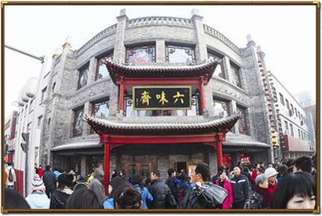
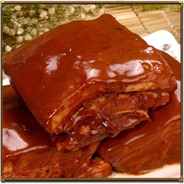

六味斋虽然在山西太原，但它的历史却可以追溯到清乾隆年间的北京，它是国内食品行业现存为数不多的具有200年以上历史的老字号之一。
始创于1738年（清朝乾隆三年）的中华老字号，生产的酱肉系列产品是我国传统食品，三晋名吃，曾作为皇宫贡品享誉京师。在全国而言，具有如此悠久历史和成熟工艺的中式肉制品生产企业也是绝无仅有的。作为企业，在现代社会生存的根本就是要有经济收益。而在1993年，六味斋肉制品厂先后与港商、台商合资，结果陷入“泥潭”，六味斋产品几乎销声匿迹。
但是经过六味斋人的不断努力改革，最终引入连锁专卖模式，拉开了自营连锁经营的序幕，六味斋终于走出了生存的困境。
而以更高的标准要求自己，从2006年六味斋“好助妇”餐饮公司成立之日起，他们先后派出30多名中层领导和员工到西式快餐店进行实习观摩，在吸取国内、省内一些中式快餐经验教训的基础上，建立了统一管理、统一标准、统一采购、统一生产的主食加工配送中心，将传统的烹饪技艺与现代食品工业化操作手段相结合，完成了由传统经验型向科学化、标准化、数据化的转变，对中央厨房实行工厂化管理，确保了产品品质的连续性和一贯性。
随着城市化进程和人们工作、生活节奏的加快，许多年轻人不愿再去为一日三餐费心劳神、浪费时间，特别是早餐。据统计，有50%的城市居民难以吃上放心早餐，而在外吃早餐的人群中，又有70%的人对早餐不满意。这样看来，吃早餐难就成为尚待解决的民生问题。六味斋就是抓住了这一市场，“好助妇”餐饮公司才能越做越大。
最近这两年，随着苏丹红、地沟油、三聚氰胺、瘦肉精、增白剂等事件的陆续曝光，中国食品界进入了一个令人膛目结舌的“事故高发期”。难怪有人开玩笑说，一个中国人倒下之后，直接拍扁就是一张“元素周期表”。
六味斋董事长阎继红曾经说过：食品安全是一个良心工程，国家制定的质量标准应当作为我们生产检测的最低底线，我们自己的质量标准应该比国际更高、执行的更严格。企业要想做久、做强、做大，必须掏出良心，才能赢得更多消费者。
在经商理念这一方面，六味斋不仅继承了晋商传统的诚信理念，更为大家树立了一个良好的现代晋商榜样。现代企业的发展，必须摒弃落后传统的经营理念，改革发展才是繁盛之根本。
六味斋，这个中华老字号经过一辈又一辈人的努力，一直保持着自开宗立派以来260多年的传统工艺、传统风味，生意越做越大、越做越强。如同北京人信得过全聚德、天津人离不开狗不理一样，太原人对六味斋情有独钟。

-Large.png)

六味斋虽然在山西太原，但它的历史却可以追溯到清乾隆年间的北京，它是国内食品行业现存为数不多的具有200年以上历史的老字号之一。


-Small.png "点击查看详情")
-Small.png "点击查看详情")
-Small.png "点击查看详情")